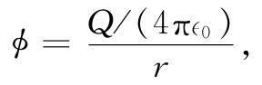

在第18章中我们曾发现，麦克斯韦方程组是可以求得解答的，即通过设
（21.2）
和 B=▽×A， （21.3）
式中ϕ和A这时必定是下列两方程的解，
现在要来求出式（21.4）和（21.5）两方程之解。为此，就得求方程
（21.7）
的解ψ，这里我们称之为源的s是已知的。当然，对于式（21.4）来说，s相当于ρ/∈0 而ψ相当于ϕ，或者若ψ为Ax ，则s为jx /（∈0 c2 ），等等。但我们要作为一个数学问题来解方程式（21.7）而不管ψ和s在物理上指的是什么。
在ρ和j都分别等于零的那些地方——即在我们称之为“自由”空间里——势ϕ和A以及场E和B都满足无源的三维波动方程，其数学形式为
（21.8）
在第20章中就知道这一个方程的解可表示不同类型的波：在x方向上的平面波ψ=f（t-x/c）；在y方向、z方向或任何其他方向上的平面波；或者具有如下形式的球面波：
方程的解也可以按其他方式写出，比方从一根轴线向外传播的柱面波。
我们也曾指出，在物理上，式（21.9）不代表自由空间里的波——必须在原点处有电荷才能获得开始向外行进的波。换句话说，式（21.9）是方程（21.8）在每个地方的解，除了很靠近r=0处，在那里它必然是包括某些源的完整方程式（21.7）的解。让我们看看如何处理这个问题，方程式（21.7）中要有什么样的源s才能产生像式（21.9）那样的波？
假设已有了式（21.9）的球面波，并考察在r十分微小处所发生的情况。这时，f（t-r/c）中的推迟-r/c可以忽略——只要f是一个平滑函数——因而ψ变成
（21.10）
所以ψ很像在原点处随时间变化的电荷产生的库仑场。这就是说，要是有一小堆电荷被限制在原点附近的一个小区域里，并具有密度ρ，那么我们知道

式中Q=∫ρdV。现在我们懂得这样的ϕ满足方程
根据相同的数学，我们总可以讲，式（21.10）中的ψ满足
▽2 ψ=-s（r→0）. （21.11）
这里s与f的关系为
而 S=∫sdV.
唯一不同之处是在这种普遍情况下，s，从而S，都可以是时间的函数。
现在重要的事情在于：若对于小r来说ψ满足方程式（21.11），则它也满足方程式（21.7）。当我们进至极靠近原点时，ψ对1/r的依存关系使空间微商变得十分大。但时间微商却仍保持它们原有的值［它们不过是f（t）的时间微商］。所以当r趋于零时，式（21.7）中的∂2 ψ/∂t2 项比起▽2 ψ来就可以忽略，而方程式（21.7）也变得与方程式（21.11）等价。
因此扼要地说，若方程式（21.7）中的源函数s（t）被置在原点处并具有总强度
S（t）=∫s（t）dV， （21.12）
则该方程式（21.7）的解便是
式（21.7）中∂2 ψ/∂t2 项的唯一影响是在库仑势中引入了推迟时间（t-r/c）。